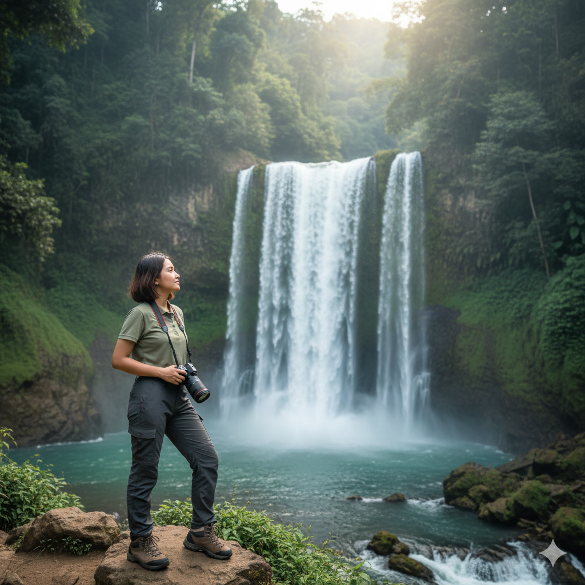

Kategori: Campuran (Solo Friendly) | Durasi: 1D
📸 Dokumentasi profesional + konten siap upload TikTok/IG.
Daftar Sekarang (WhatsApp)
Itinerary Singkat (1 Hari)
- 05.00: Berangkat dari Malang
- 08.30: Explore Tumpak Sewu + Air Terjun Goa Tetes
- 12.00: Makan siang (termasuk) + istirahat
- 15.00: Perjalanan kembali ke meeting point
Fasilitas Termasuk (All-In)
- ✓ Transport PP (Sharing)
- ✓ Tiket masuk & guide lokal
- ✓ Makan 1x & snack
- ✓ Tour Leader & Crew Wayscape
🎁 Bonus Spesial
- ✓ Dokumentasi profesional
- ✓ Konten siap upload (TikTok/IG Reels)